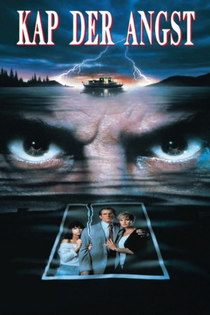

#54 Kap der Angst
Alternativ: Cape Fear
Auszeichnungen: für 2 Oscars nominiert
 
 IMDB-Wertung: 7.3 / 10
IMDB-Wertung: 7.3 / 10  Metascore: 73
Metascore: 73 
Sam Bowden is a small-town corporate attorney/"Leave It to Beaver"-esque family-man. Max Cady is a tattooed, cigar-smoking, bible-quoting, rapist. What do they have in common? Fourteen years, ago Sam was a public defender assigned to Max Cady's rape trial, and he made a serious error: he hid a document from his illiterate client that could have gotten him acquitted. Now, the cagey, bibliophile Cady has been released, and he intends to teach Sam Bowden and his family a thing or two about loss.
Jahr: 1991
Dauer: 128 Minuten
FSK: 16
Land: USA Studio: Universal PicturesTonspuren: DTS - ,
Untertitel:
Auflösung: 1080p (1920×816) Größe: 9052 MB
Genre: Krimi, Thriller
Regisseur:  Martin Scorsese
Martin Scorsese
Drehbuch: John D. MacDonald, James R. Webb, Wesley Strick
Soundtrack:
Darsteller:
 Robert De Niro als Max Cady
Robert De Niro als Max Cady Nick Nolte als Sam Bowden
Nick Nolte als Sam Bowden Jessica Lange als Leigh Bowden
Jessica Lange als Leigh Bowden Juliette Lewis als Danielle Bowden
Juliette Lewis als Danielle Bowden Joe Don Baker als Claude Kersek
Joe Don Baker als Claude Kersek Robert Mitchum als Lieutenant Elgart
Robert Mitchum als Lieutenant Elgart Gregory Peck als Lee Heller
Gregory Peck als Lee Heller Martin Balsam als Judge
Martin Balsam als Judge Illeana Douglas als Lori Davis
Illeana Douglas als Lori Davis Fred Dalton Thompson als Tom Broadbent
Fred Dalton Thompson als Tom Broadbent Antoni Corone als Corrections Officer
Antoni Corone als Corrections Officer- Tamara Jones als Ice Cream Cashier
- Domenica Cameron-Scorsese als Danny's Girlfriend
- Ken Collins als Big Man #3
 Catherine Scorsese als Fruitstand Customer
Catherine Scorsese als Fruitstand Customer Charles Scorsese als Fruitstand Customer
Charles Scorsese als Fruitstand Customer- Esther Rolle als Woman Watching Cady Get Out from Under the Car , uncredited
- Ken Waters als Bar Patron , uncredited
- Zully Montero als Graciella
- Craig Henne als Prisoner
- Forest Burton als Prisoner
- Edgar Allan Poe IV als Prisoner
- Rod Ball als Prisoner
- W. Paul Bodie als Prisoner
- Joel Kolker als Corrections Officer
- Roger Pretto als Racquetball Colleague
- Parris Buckner als Racquetball Colleague
- Margot Moreland als Secretary
- Will Knickerbocker als Detective
- Robert L. Gerlach als Arresting Officer
- Bruce E. Holdstein als Arresting Officer
- Richard Wasserman als Parade Watcher
- Paul Nagle Jr. als Parade Watcher
- Paul Froehler als Parade Watcher
- Mary Ellen O'Brien als Parade Watcher
- Jody Wilson als Parade Watcher
- C.C. Costigan als Waitress
- Gar Stephen als Big Man #1
 Billy D. Lucas als Big Man #2
Billy D. Lucas als Big Man #2- Linda Perri als Ticket Agent
- Libby Moyer als Ticket Agent
- Jackie Davis als Jimmy the Dockmaster
- George Grafas als Bar Patron , uncredited
Datei: X:\1991\Kap der Angst (1991, FSK16, 1920x816).mkv seit 02.02.2015
Festplatte: HD 1987-1991
 Es gibt insgesamt 53 Filme in der Gruppe '1991'
Es gibt insgesamt 53 Filme in der Gruppe '1991'